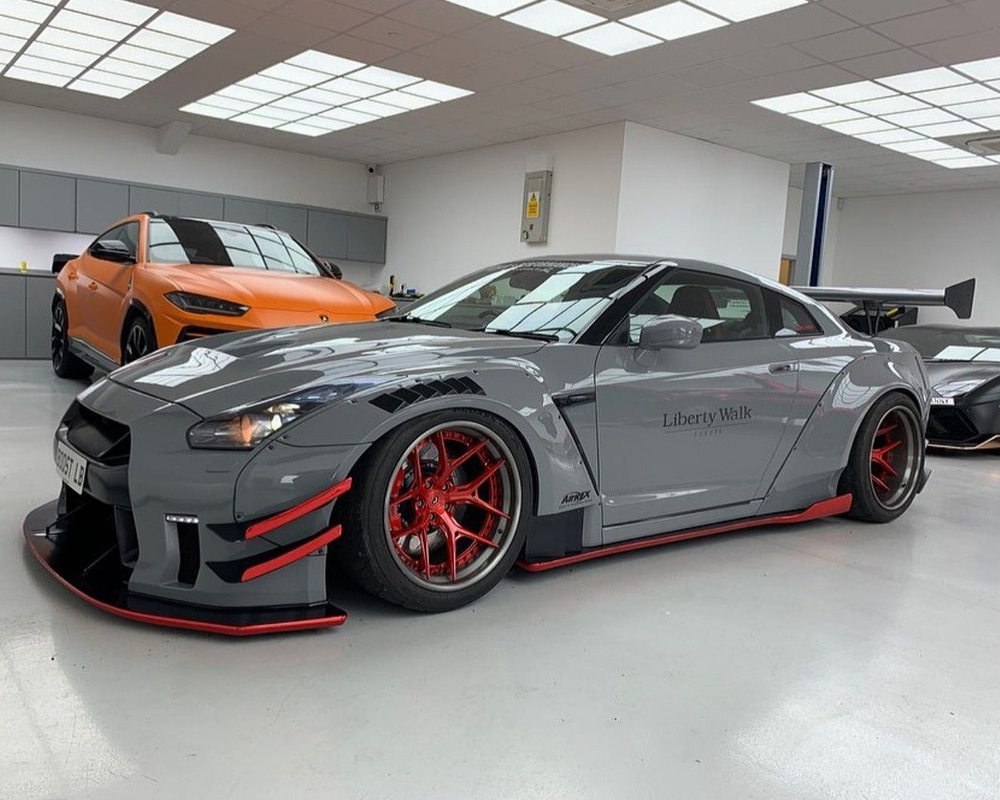
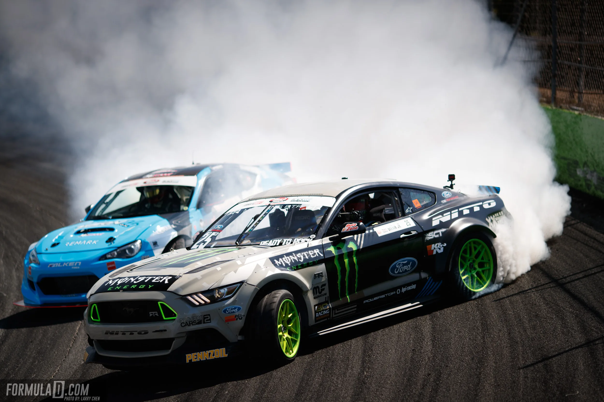
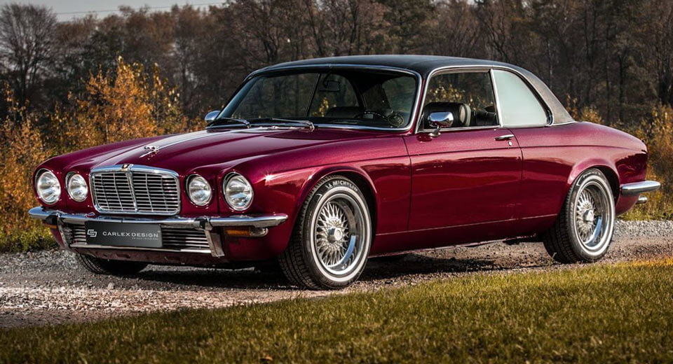

Тюнинг
Чип-тюнинг, выхлопные системы, обвесы. Люблю наблюдать, как из стоковой машины делают произведение искусства.
Всё, что связано с машинами и заставляет моё сердце биться быстрее.

Чип-тюнинг, выхлопные системы, обвесы. Люблю наблюдать, как из стоковой машины делают произведение искусства.

Формула-1, WRC, дрифт. Слежу за сезонами, болею за конкретных пилотов и анализирую тактику команд.

Старые Mercedes, Jaguar E-Type, Ford Mustang первого поколения. Машины с историей и душой.
Проверь свои рефлексы за рулём — уворачивайся от встречных машин и ставь рекорды!
Играть →